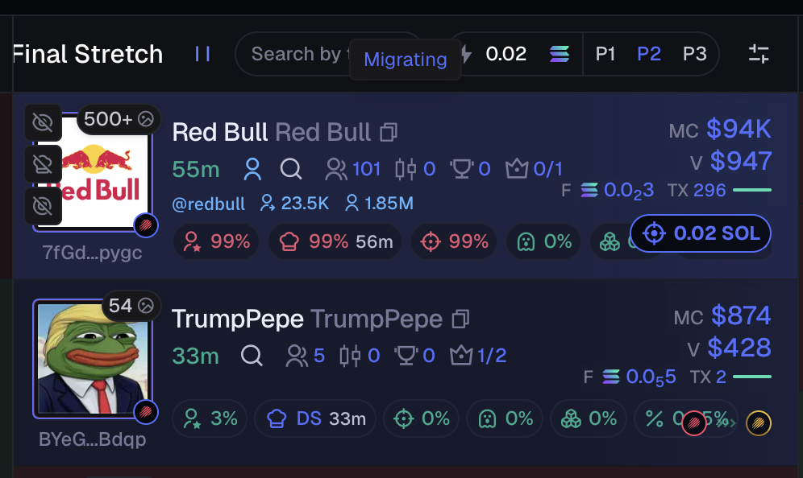
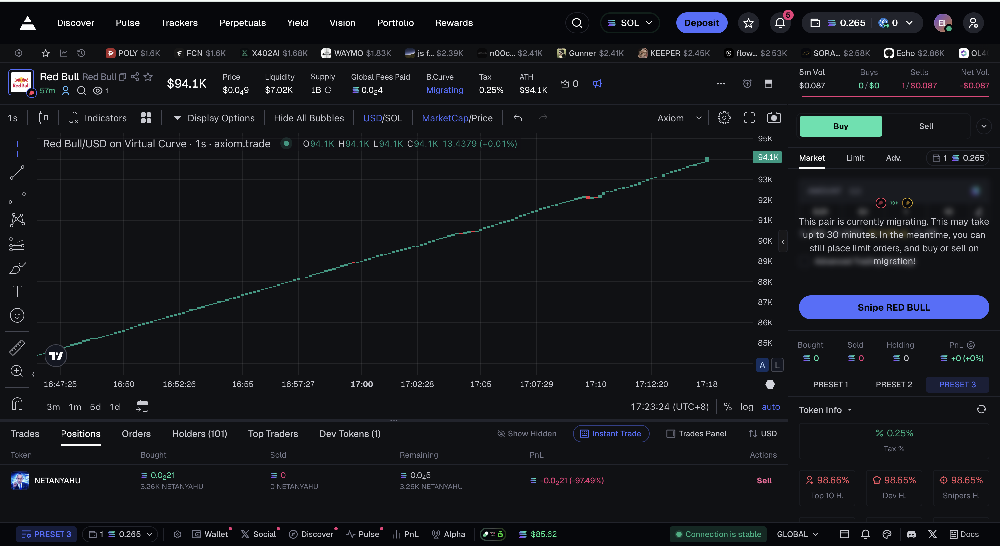
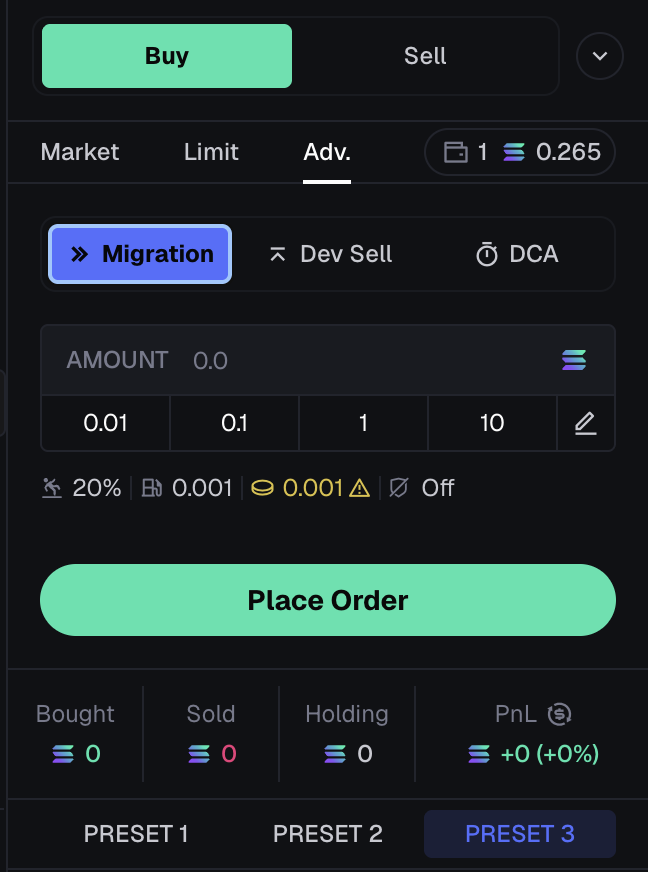
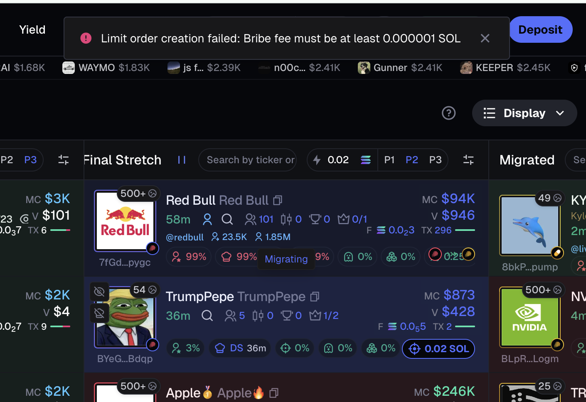
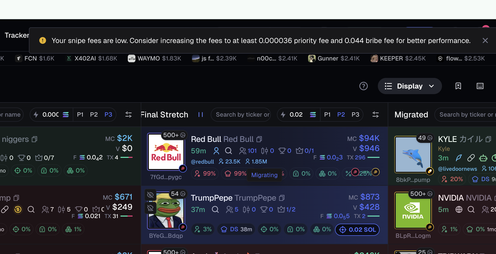
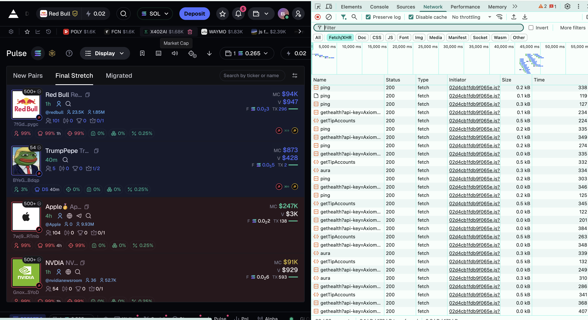

Task #130 关联 · 2026-04-23 · 基于实操截图的竞品分析
Axiom 在 Token 接近毕业（Migrating）时，不走 Bonding Curve 内盘买入，而是提供专用的 Migration Snipe 功能——用户提前设置参数并给出 Bribe Fee（Jito Tip），由服务端在迁移完成的瞬间通过 Jito Bundle 抢入外盘第一批交易。
如果用户提前布置了 Sniper 并给出足够高的 Bribe Fee，在 Migrating 窗口期确实有结构性优势。
| 普通 Buy（GMGN / Binance） | Axiom Migration Snipe | |
|---|---|---|
| Migrating 期间行为 | 路由到 Bonding Curve 内盘直接成交 | 不走内盘，预挂单等外盘开盘 |
| 触发方式 | 用户点击 → 客户端立即构建+广播 | 用户预挂 → 迁移完成后自动触发交易（具体机制待确认） |
| 执行机制 | 用户浏览器（客户端） | 两种可能（见下方分析）： ① 链上限价单（合约自动执行） ② 服务端监听 migration 后发市价单 |
| VPN / 用户网络影响 | 全链路影响（发现+构建+广播） | 仅影响预挂环节；无论哪种机制，交易执行本身不经过用户网络 |
| Fee 结构 | 仅 Priority Fee | Priority Fee + Bribe Fee（Jito Tip），平台建议 Bribe ≥ 0.044 SOL (~$3.7) |
示例 Token: Red Bull (7fGd...pygc)，SOL Pump.fun / Meteora DBC，状态 Migrating。






| Token | Axiom | GMGN | Binance Web3 |
|---|---|---|---|
| Red Bull (7fGd...pygc) Meteora DBC，未毕业 |
Snipe（Migrating） | Buy（直接买入） | Buy（直接买入） |
| NVDIA (Gnox...SYoD) Meteora DBC，未毕业 |
Snipe（Migrating） | Buy（直接买入） | Buy（直接买入） |
含义：GMGN / Binance 路由到 Bonding Curve 内盘直接成交。Axiom 检测到 Token 接近毕业，不走内盘，预挂单等外盘开盘第一时间通过 Jito Bundle 冲入。
| 发现 | 详情 | 证据 |
|---|---|---|
| 三种下单方式 | Market（一键 Snipe）/ Limit（限价单）/ Adv. → Migration（高级迁移订单） | 截图 1, 2, 3 |
| 双 Fee 结构 | Priority Fee（Solana 优先级）+ Bribe Fee（Jito Bundle Tip），平台建议 Bribe ≥ 0.044 SOL (~$3.7) | 截图 3, 5 |
| 订单提交到平台 | "Limit order creation failed" 错误 → 订单由平台处理（服务端或链上合约），非纯客户端本地执行 | 截图 4 |
| 客户端持续轮询 | ping（保活）/ gethealth（RPC 健康）/ getTipAccounts（Jito Tip 账户列表）/ aura（内部状态同步），间隔 3-10s | 截图 6 |
| 迁移进度可视化 | 列表中实时显示迁移百分比（9% → 23%），帮助用户判断时机 | 截图 4, 5 |
| 结构性优势 | Snipe 将用户网络从交易执行的关键路径中移除——无论底层是链上限价单还是服务端市价单，执行阶段都不经过用户网络 | 截图 7 + 机制分析 |
Axiom 选择放弃内盘、等外盘 Snipe，是否真的在价格上有优势？这需要链上数据验证。
| 问题 | 验证方法 | 意义 |
|---|---|---|
| B-内盘：内盘末期买入体验 接近毕业时在内盘买，价格和成交如何？ |
实测：在 Binance/GMGN 上对 Migrating Token 点 Buy，记录成交价 链上：取 Bonding Curve 最后 5 笔交易的价格 |
确认我方用户当前能获得的价格基线 |
| B-外盘：Dead Zone 后谁先买到？ 我们没有 Snipe，只能手动 vs Axiom 自动 |
实测：对比手动 Buy vs Axiom Snipe 的 slot 差 链上：统计 migration block 后前 10 笔交易的来源平台 |
量化 Snipe 的速度优势（block offset） |
| B-收益：内盘末期 vs 外盘首买，价格差多少？ Axiom 放弃内盘等外盘，价格上真的更优吗？ |
链上分析（大样本）： 取近 7 天毕业的 Token（预计 200+ 个），对每个 Token 对比：
如果 price_gap > 0 → 外盘开盘价更高（不一定值得等） |
决定产品策略：
|
| 数据结果 | 结论 | 产品建议 |
|---|---|---|
| 外盘首买价 < 内盘末期价 price_gap < -5%（多数 Token） |
Migration Snipe 有价格 + 速度双重优势 | 高优做 Migration Snipe 功能 |
| 价差不明显 -5% < price_gap < +5% |
Snipe 优势主要在"确保买到"，非价格 | 中优，对高频用户有价值 |
| 外盘首买价 > 内盘末期价 price_gap > +5%（多数 Token） |
内盘直接买更划算，Snipe 让用户多付了钱 | 低优，可先优化内盘买入体验 |
Task #130 关联调研 · Axiom Migration Snipe 机制分析
Updated: 2026-04-23 · Author: Elsa